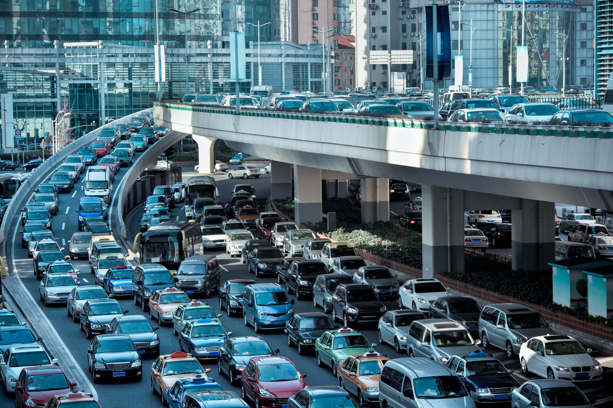
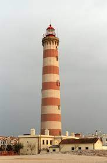
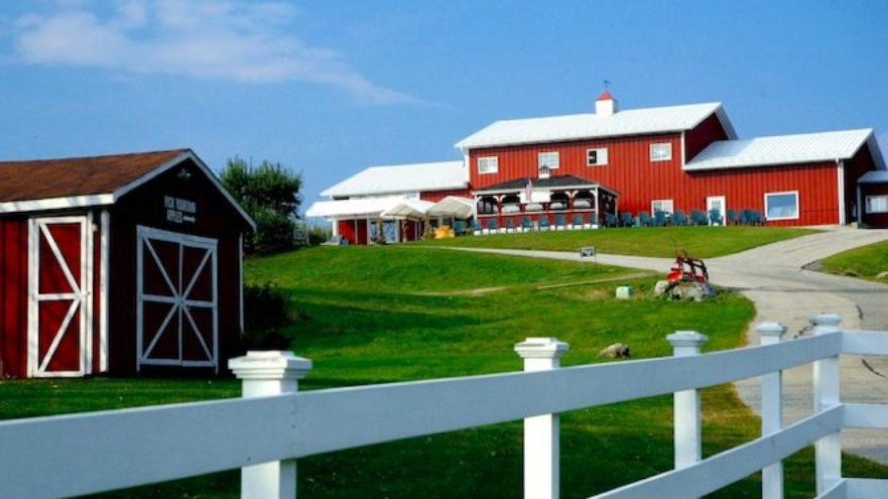
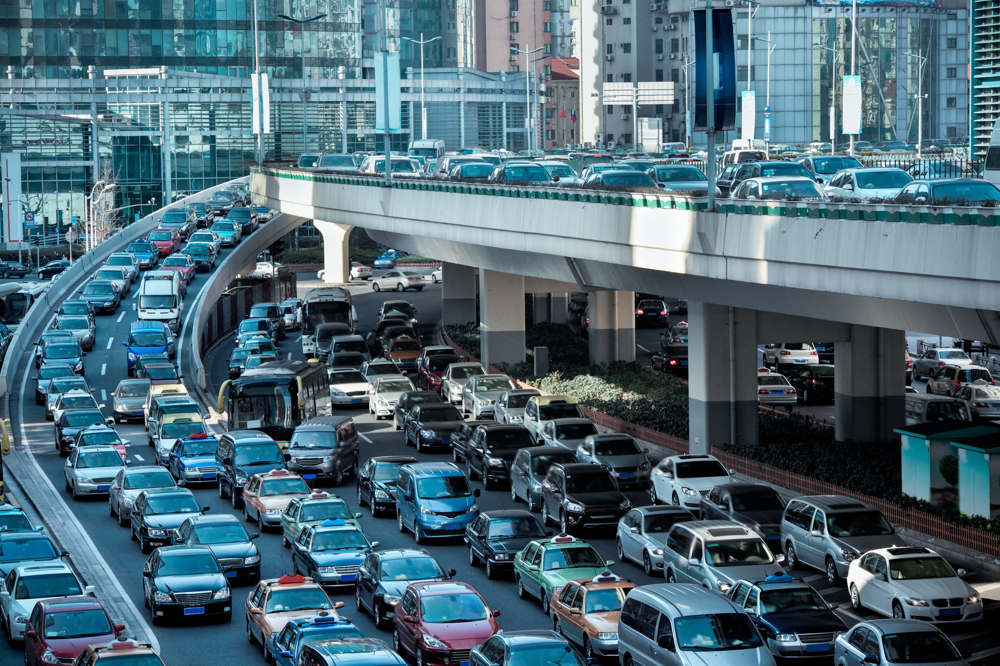
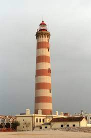
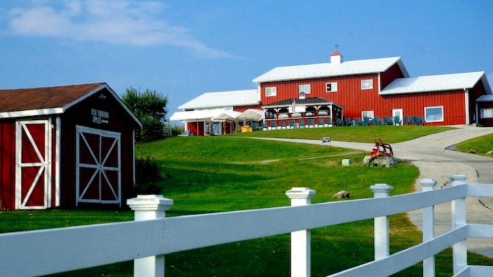

Witnessed
0
Mass Flux
Daily
Product
 





Refute
0
Independent Connection
Seasonal
Figural
Sport Analytics
S
Modern Infrastructure
Clarity
Cultivating
Pro Soccer
S1
Commute Times
Lighthouse
Garden
Accounting ~2
Working From Home
Sunrise
Bodybuilding
Art Criticism
~S1
Radio Antennae
Prarie
Woodcarving
Zoo
~S2
AntiVax
Ocean
Fish Farm
Intuition ~S
Conspiracy
Mass
Reductive